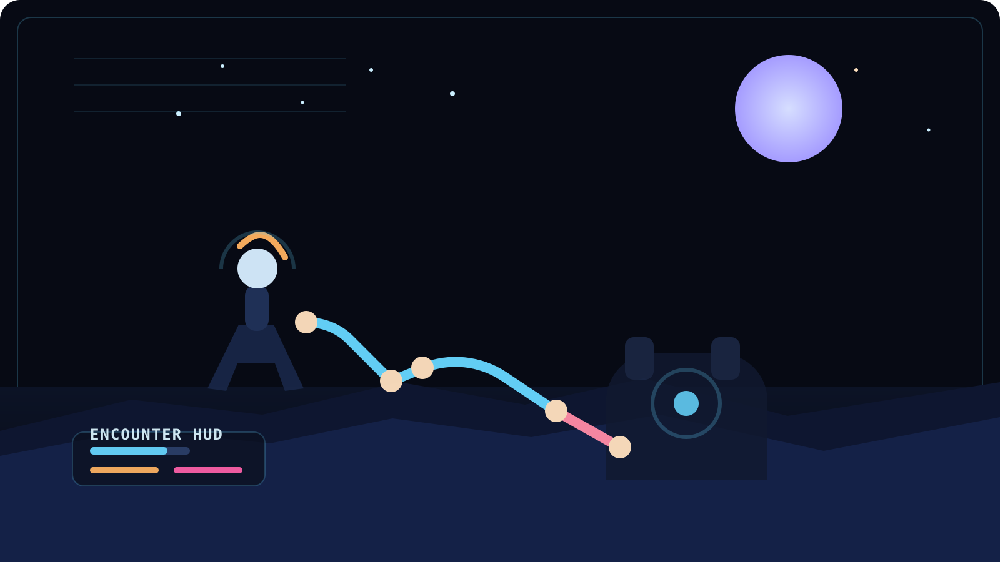
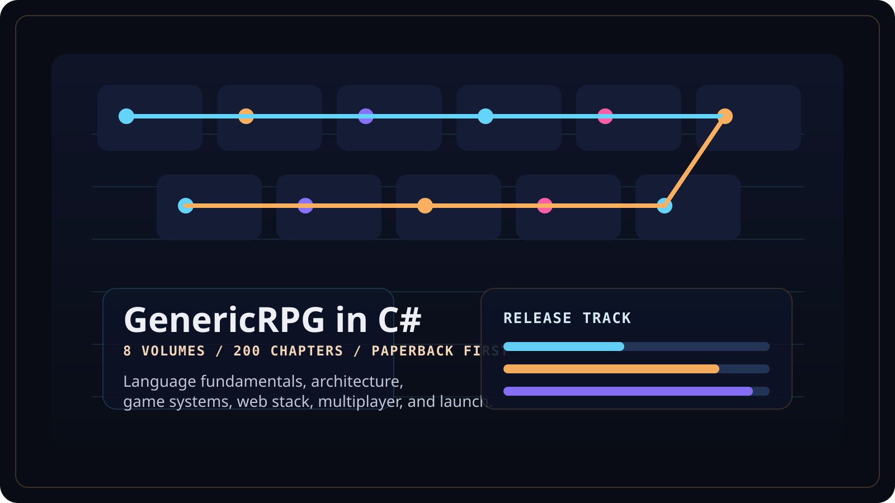

Combat readability
Gameplay should stay legible even when the screen gets loud.
I care about player control, pressure readability, feedback timing, and systems that still feel intentional when the pace rises.
Unity gameplay programmer / systems builder
I build gameplay systems, prototype tools, and developer-facing workflows with a focus on combat readability, player responsiveness, and long-term iteration. Right now I am shaping a Unity RPG prototype, a game bug tracker, and the 8-volume GenericRPG in C# book series into real portfolio case studies.
Live portfolio build. Real project media, deeper case studies, and a public resume packet are being layered in next.
Combat readability
I care about player control, pressure readability, feedback timing, and systems that still feel intentional when the pace rises.
Developer workflow
I like projects where gameplay implementation and support tooling strengthen each other instead of living in separate worlds.
Open channels
Portfolio: tanvirahmedarnab.com
GitHub: github.com/TanvirAhmedArnab
LinkedIn: linkedin.com/in/taanb
Current projects
A game-focused Razor Pages tool for organizing bug reports, keeping severity and status readable, and building a more practical internal triage workflow for active projects.

Node 02A developing Unity prototype focused on RPG combat, progression, exploration flow, and the moment-to-moment decisions that make a game worth tuning repeatedly.

Node 03A long-form technical book series teaching C#, software architecture, and game development through one cumulative RPG build that grows from first principles into full platform thinking.
Learn C#, Software Architecture, and Game DevelopmentASP.NET Core, and BlazorDeveloper loadout
Role sheet
Developer stats
Quest log
About
I'm especially interested in gameplay systems, combat feel, AI behavior, encounter readability, and the tooling that helps a solo developer or small team iterate more effectively. I want the final site to show both what I build and how I approach the work.
This version is intentionally honest: the structure is live, the contact path is real, and the case-study layer is being filled in with actual projects rather than padded with fake production claims.
Contact
Open channels